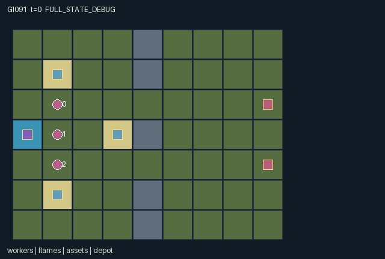

GI091 / SPATIAL
余烬防线
有限水源同时支持灭火、防火墙和队友补给；实体障碍改变人员与火势的路径。
Original saved demonstration
Recorded native state, often authored scripts or interventions; information scope and failures are preserved in the original provenance. This is a saved demonstration, not live browser play.

Release verification episode
Untrained uniform legal actions. Actual JAX state sampled along the full original episode; full-state debug camera. No human performance or learning claim.

Run this game
crucibles play --game 91
Start Python locally, then open the address printed by the terminal. Installation, multiplayer, takeover and keyboard controls →
Objective, rewards & ending
Exact task contract
{
"objective": "Contain two spreading fire fronts while preserving at least one of three shared assets, using finite water, temporary firebreaks and teammate transfers.",
"natural_termination": "Success when all fire lifetimes are zero and at least one asset survives; failure when all three assets have zero integrity. The shared per-step reward is success minus failure minus total new asset damage divided by 16. Otherwise truncate at step 96.",
"interaction": "Building blocks partners' movement and fire transmission at the same physical cells. Using the depot consumes finite supplies available to others. Handing water to an adjacent teammate enables later suppression or construction. Firebreak erosion and depleted fuel determine future spread.",
"observation_access": "The entire physical world and resource state are public. All groups have all-true role visibility and the static terrain is public. Observation includes the complete fire, fuel and barrier arrays, all worker resources and all protected assets."
}Declared per-step reward bounds: -2 to 1. Observability: fully_observable.
Rules
- Fire occupies actual grid cells, lasts three steps and spreads into unused adjacent fuel every third step. Fuel never regrows.
- Spend one water to spray your own and front cells, or two to build a two-strength firebreak. Firebreaks block workers and fire until removed or eroded.
- A single finite depot serves all three workers. Adjacent workers may transfer one water; tanks hold three.
- Facing follows directional attempts. Workers in fire lose water and have actions suppressed while stunned. Stone cells block workers and do not burn.
- Protect at least one asset until no flame remains. Losing every asset ends in failure; the horizon is 96 steps.
Original mechanism document (historical status wording retained)
# Ember Weir: Shared Firebreaks
Status: **AUTHORED_NOT_EXECUTED**. Candidate `game-v3-00091`, attempt 00; train-only prospective source. A/O/U/H = 3/293/10/96. Source SHA256: `ecdc0a48686f6ef2675b5c36074a44339a2882bfef85950b50df836fd7e09d40`.
Original cooperative containment world. The central stone spine leaves two traversable fire corridors, so a barrier can protect the community while cutting a worker's route. Finite shared stock, handoffs, fuel exhaustion and timed erosion generate persistent cross-agent effects.
## Literal rules and transition order
1. Initial flames occupy (8,2) and (8,4); their own fuel is already consumed. Terrain stones at x=4,y=0,1,3,5,6 leave corridors y=2 and y=4. Assets at (1,1),(1,5),(3,3) each have three integrity; the nonflammable depot at (0,3) holds eighteen units, in addition to three carried by each worker.
2. Actions 1..4 both attempt movement and set facing, including when blocked. Firebreaks and stones block movement. Another role's previous cell and a duplicated target block movement. All in-range IDs are legal attempts; unavailable interactions do nothing. Invalid IDs and any actions while stunned become wait. Only wait is legal after joint termination.
3. Interactions are processed in role order rotated by the current clock. Spray spends one water and extinguishes current/front cells. Construction spends two and requires empty grass, no worker, no flame and no existing barrier in the front cell. It produces strength two.
4. Refill draws one unit when within Manhattan distance one of the depot. Give moves one unit to an adjacent other role with capacity, using rotating priority for multiple recipients. Dismantling a front firebreak removes its entire remaining strength and refunds at most one water; it can reopen a teammate's route but reopen a fire corridor as well.
5. After all interventions, cardinal neighbors of remaining fire are exposed. On every third step exposed unused fuel ignites unless a firebreak is present. Existing fire loses one lifetime each step; new ignition starts at three and consumes fuel permanently. An exposed barrier loses one strength on each spread tick after blocking that tick.
6. Assets in the resulting fire lose one integrity. A worker in the resulting fire loses one carried water and receives stun two. A non-burning worker's stun decays. Workers remain physical obstacles and can later act again; there is no individual early termination.
7. All-fire extinction with a surviving asset is natural success. All assets destroyed is natural failure. Damage incurs a shared penalty of 1/16 per asset on that step; success gives +1 and failure -1, so a failure/damage step can be below -1.
## Cross-agent consequences and untested paired interventions
- A worker who builds a front firebreak changes the next spread into that physical cell and a partner's ability to walk through it. Dismantling reverses both effects with delayed fire consequences.
- Drawing the last depot unit deprives a later teammate of refill; giving water can let that teammate build a barrier they otherwise could not afford. These are transfers of the same finite state resource.
- Suppressing a source before a third-step spread removes ignition opportunities for every adjacent cell, potentially preserving a partner's route or preventing shared asset loss several steps later.
These are consequences derived from source inspection and proposed intervention traces. No paired-action execution or strategic-richness acceptance has been performed by the author.
## Partner-dependent strategies and possible variation
Unmeasured alternatives include early coordinated corridor sealing, direct forward suppression with a supply runner, or sacrificing an outlying asset to conserve water for the remaining two. Barriers trade immediate protection against teammate routing; spray and construction compete for the same water. Action order and fire phase matter.
Separately authorized future map/fuel arrangements, barrier endurance, depot stock or observation restrictions could change which corridors and handoffs matter. This package implements only the stated fully observable rules; no measured learning or transfer is claimed.
## Information, rendering and invariants
The entire physical world and resource state are public. All groups have all-true role visibility and the static terrain is public. Observation includes the complete fire, fuel and barrier arrays, all worker resources and all protected assets.
The scene contains no executable rendering code. Its world, entity groups, attribute labels, event semantics, actions and observation labels are copied from this package's own manifest declarations. Visible positions bind directly to state arrays used in transitions. Inactive delivered objects are hidden as declared; the privileged debug state must be labelled separately from each role view. Events are last-transition flags, not cumulative event counts. The absorbing terminal keeps the final flags frozen; a repeated terminal call is not a newly occurring game event.
Worker xy lies in x=0..8,y=0..6 with unique positions; water 0..3, facing 1..4, stun 0..2, stock 0..18, fire 0..3, fuel 0..1, barriers 0..2, asset integrity 0..3. Reward lies in [-1.1875,1], enclosed by manifest [-2,1]. All observation values are in [0,1], enclosed by [-1,1].
All integer state fields use int32, all logical leaves bool, and returned observations/rewards float32. No key is duplicated in state. This particular source is deterministic and does not use the supplied stochastic key. Normalization uses powers of two. These are design and source properties, not an eager/JIT parity receipt.
## Terminal and integration contract
A live input increments scalar int32 t exactly once. Natural completion takes priority on the horizon: truncated is (next_t >= H) AND NOT terminated. episode_done equals terminated OR truncated. A terminal input returns the identical state/observation/clock, zero rewards, all dones true and the preserved natural/truncated cause. There is no reset inside raw_step. A trusted outer wrapper owns reset. Native learning receives only observe(state) and legal_actions(state).
The kernel is the homogeneous array boundary. A community JaxMARL dictionary adapter with per-agent dictionaries and __all__ is a separate coordinator-owned integration layer; its existence or correctness is not asserted by this source package. Completed individual deliveries do not remove a role from the joint action interface.
## Source line evidence
`candidate.py`, lines 12-16 (original_world):
```python
# EVIDENCE: original_world
cells = jnp.stack((jnp.mod(jnp.arange(63), 9), jnp.arange(63) // 9), axis=1).astype(jnp.int32)
terrain = jnp.zeros((7, 9), dtype=jnp.int32)
terrain = terrain.at[jnp.array([0, 1, 3, 5, 6]), 4].set(1)
terrain = terrain.at[3, 0].set(2)
```
`candidate.py`, lines 57-61 (public_observation):
```python
# EVIDENCE: public_observation
public = jnp.concatenate((
state["agent_pos"].reshape(-1).astype(jnp.float32) / 16.0,
state["water"].astype(jnp.float32) / 4.0,
state["facing"].astype(jnp.float32) / 4.0,
```
`candidate.py`, lines 87-91 (barriers_change_partner_routes):
```python
# EVIDENCE: barriers_change_partner_routes
blocked = (state["map"][target[:, 1], target[:, 0]] == 1) | (state["barrier"][index] > 0)
occupied = jnp.any(jnp.all(target[:, None, :] == old[None, :, :], axis=2) & (ids[:, None] != ids[None, :]), axis=1)
duplicate = jnp.sum(jnp.all(target[:, None, :] == target[None, :, :], axis=2), axis=1) > 1
pos = jnp.where((is_move & ~blocked & ~occupied & ~duplicate)[:, None], target, old)
```
`candidate.py`, lines 104-108 (scarce_shared_resources_and_transfers):
```python
# EVIDENCE: scarce_shared_resources_and_transfers
for k in range(3):
i = jnp.mod(k + state["t"], 3)
spray = (a[i] == 5) & (water[i] > 0)
sprayed_cells = (cell_ids == current_index[i]) | ((cell_ids == front_index[i]) & inside[i])
```
`candidate.py`, lines 131-135 (persistent_spreading_hazard):
```python
# EVIDENCE: persistent_spreading_hazard
adjacent = jnp.sum(jnp.abs(state["cell_pos"][:, None, :] - state["cell_pos"][None, :, :]), axis=2) == 1
exposed = jnp.any((fire > 0)[:, None] & adjacent, axis=0)
spread_tick = jnp.mod(state["t"] + 1, 3) == 0
ignition = spread_tick & exposed & (state["fuel"] > 0) & (barrier == 0)
```
`candidate.py`, lines 153-157 (natural_priority_absorbing_terminal):
```python
# EVIDENCE: natural_priority_absorbing_terminal
n = dict(state)
n["t"] = state["t"] + 1
n["agent_pos"] = pos
n["water"] = water
```
## Supplied community references and originality
- [JaxMARL_README.md](https://github.com/bold-lab-ai/JaxMARL/blob/main/README.md) — Read supplied Quick Start/API text: parallel agent-keyed dictionaries and __all__ are an external adapter target; no upstream environment source or layout copied. Supplied-file SHA256: `6649d04f5ed05d620e78e8416a00d4db841cf2633ae60fdb3c9729e037a71c15`.
- [Pgx_README.md](https://github.com/sotetsuk/pgx/blob/main/README.md) — Read supplied Usage/API v2 text: JAX-native state transitions, explicit legal masks and caller-provided stochastic keys. No board rules, implementation or rendering copied. Supplied-file SHA256: `153f44999e55d5df3e51e13dee6ef418cc9704ddfa26206f1dc5789b9cbbf8df`.
- [Craftax_README.md](https://github.com/MichaelTMatthews/Craftax/blob/main/README.md) — Read supplied description, Basic Usage and reset discussion for spatial resource consequences and environment/algorithm separation. No game mechanics implementation, assets or layout copied. Supplied-file SHA256: `7f9757a2047143cf183f7e2e84851a740f386af80dbee050c89b316d66a3d3ff`.
- [PureJaxRL_README.md](https://github.com/luchris429/purejaxrl/blob/main/README.md) — Read supplied Code Philosophy and overview: single-file end-to-end JAX learning implementations are algorithm references, not a new game library. No learning code imported, copied or run. Supplied-file SHA256: `d5f40182c924a42cec820931e61a7d5070e48c4c8413c7d16455abc6ea0ef6b0`.
Only the supplied static README copies were consulted. The supplied Craftax PPO recurrent baseline was not read or used. Craftax is the game/mechanics reference; Pgx is a discrete-game API reference; PureJaxRL and the unconsulted PPO baseline are algorithm/integration references. No upstream code, benchmark layout, heldout implementation, project result, prior candidate, model call or network request was used. Common interface and terminal code here implements the supplied author contract, not an imported environment.
## Playthrough limits
`playthrough.json` is a fixed, in-range joint-action script with a reset seed. Every in-range attempt is legal while live. A replay driver must stop on done_all; only wait is legal afterward. Objectives and events in that file are intended hypotheses, not observations. The script is not a policy, solvability proof or success certificate. Candidate imports, reset/step calls, validators, JIT/vmap, training and rendering were not executed by this author. Root independently accepts or rejects the entire sealed batch after delivery.
Commands
Roles & abilities
agent_0 Northern containment worker
agent_1 Central supply and relief worker
agent_2 Southern containment worker
Observation permissions
Training receives only the original observation rows. Role cameras use declared visibility; debug cameras are explicitly marked. Local benchmark records log debug exposure and role takeover history.
Exact observation layout
[
{
"slice": [
0,
3
],
"meaning": "Identity one-hot in role order 0,1,2",
"visibility": "self"
},
{
"slice": [
3,
9
],
"meaning": "All worker xy positions divided by 16",
"visibility": "public"
},
{
"slice": [
9,
12
],
"meaning": "Carried water divided by 4",
"visibility": "public"
},
{
"slice": [
12,
15
],
"meaning": "Facing action IDs divided by 4",
"visibility": "public"
},
{
"slice": [
15,
18
],
"meaning": "Stun duration divided by 4",
"visibility": "public"
},
{
"slice": [
18,
81
],
"meaning": "Public terrain flattened yx divided by 4",
"visibility": "public"
},
{
"slice": [
81,
144
],
"meaning": "All cells' fire lifetime divided by 4",
"visibility": "public"
},
{
"slice": [
144,
207
],
"meaning": "All cells' remaining fuel flags",
"visibility": "public"
},
{
"slice": [
207,
270
],
"meaning": "All cells' firebreak strength divided by 4",
"visibility": "public"
},
{
"slice": [
270,
276
],
"meaning": "Asset xy positions divided by 16",
"visibility": "public"
},
{
"slice": [
276,
279
],
"meaning": "Asset integrity divided by 4",
"visibility": "public"
},
{
"slice": [
279,
281
],
"meaning": "Depot xy divided by 16",
"visibility": "public"
},
{
"slice": [
281,
282
],
"meaning": "Shared depot stock divided by 32",
"visibility": "public"
},
{
"slice": [
282,
283
],
"meaning": "Clock divided by 128",
"visibility": "public"
},
{
"slice": [
283,
290
],
"meaning": "Last-step flags: spray, build, transfer, dismantle, damage, success, failure",
"visibility": "public"
},
{
"slice": [
290,
293
],
"meaning": "Joint done, natural termination, truncation",
"visibility": "public"
}
]Entity visibility & attributes
[
{
"id": "workers",
"kind": "agent",
"count": 3,
"position": [
"agent_pos"
],
"active": [
"agent_active"
],
"visibility": [
"agent_visible"
],
"attributes": [
{
"state_path": [
"water"
],
"meaning": "Carried water units, capacity three",
"display": "bar"
},
{
"state_path": [
"facing"
],
"meaning": "Front direction: 1 north, 2 east, 3 south, 4 west",
"display": "category"
},
{
"state_path": [
"stun"
],
"meaning": "Remaining suppressed-action steps after fire exposure",
"display": "number"
}
]
},
{
"id": "flames",
"kind": "hazard",
"count": 63,
"position": [
"cell_pos"
],
"active": [
"fire_active"
],
"visibility": [
"cell_visible"
],
"attributes": [
{
"state_path": [
"fire"
],
"meaning": "Remaining fire lifetime, zero to three",
"display": "bar"
},
{
"state_path": [
"fuel"
],
"meaning": "Unignited fuel flag at this cell",
"display": "flag"
}
]
},
{
"id": "firebreaks",
"kind": "gate",
"count": 63,
"position": [
"cell_pos"
],
"active": [
"barrier_active"
],
"visibility": [
"cell_visible"
],
"attributes": [
{
"state_path": [
"barrier"
],
"meaning": "Remaining resistance to exposed spread ticks",
"display": "bar"
}
]
},
{
"id": "assets",
"kind": "landmark",
"count": 3,
"position": [
"asset_pos"
],
"active": [
"asset_active"
],
"visibility": [
"asset_visible"
],
"attributes": [
{
"state_path": [
"health"
],
"meaning": "Remaining shared asset integrity",
"display": "bar"
}
]
},
{
"id": "depot",
"kind": "resource",
"count": 1,
"position": [
"depot_pos"
],
"active": [
"depot_active"
],
"visibility": [
"depot_visible"
],
"attributes": [
{
"state_path": [
"stock"
],
"meaning": "Finite shared water supply remaining",
"display": "number"
}
]
}
]Actual verification & provenance
Per-game execution receipt
{
"game": "gi091",
"status": "PASS",
"verification_revision": 2,
"source_sha256": "ecdc0a48686f6ef2675b5c36074a44339a2882bfef85950b50df836fd7e09d40",
"seed": 20261101,
"runtime": {
"jax": "0.4.38",
"numpy": "1.26.4",
"devices": [
"TFRT_CPU_0"
]
},
"dimensions": {
"num_agents": 3,
"observation_size": 293,
"num_actions": 10,
"max_steps": 96
},
"checks": {
"eager_reset": {
"status": "PASS",
"seconds": 1.351306676864624
},
"observation_spaces_legal_masks": {
"status": "PASS",
"seconds": 0.22897934913635254
},
"eager_step": {
"status": "PASS",
"seconds": 2.294898748397827
},
"jit_reset": {
"status": "PASS",
"seconds": 0.06618261337280273
},
"jit_step": {
"status": "PASS",
"seconds": 1.3267028331756592
},
"eager_jit_integer_parity_float_measurement": {
"status": "PASS",
"seconds": 0.0005192756652832031
},
"jit_vmap_reset": {
"status": "PASS",
"seconds": 0.23625731468200684
},
"jit_vmap_step": {
"status": "PASS",
"seconds": 1.7162444591522217
},
"outer_autoreset_api": {
"status": "PASS",
"seconds": 1.510711431503296
},
"full_original_horizon_episode_and_render": {
"status": "PASS",
"seconds": 1.8125195503234863
}
},
"human_scores": null,
"browser_controls": "PENDING",
"failures": [],
"elapsed_seconds": 10.97170352935791,
"float_parity_max_abs": 0.0,
"numerical_parity": "EXACT",
"raw_terminal_absorbing": "PASS",
"terminal_outer_reset": "PASS",
"episode_steps": 26,
"scripted_random_returns": [
-1.5625,
-1.5625,
-1.5625
],
"terminal": true,
"demo_information": "FULL_STATE_DEBUG",
"demo_frames": 8,
"render_roles_checked": 3
}Chromium control verification
{
"game": "gi091",
"status": "PASS",
"human_scores": null,
"engineering": true,
"checks": [
"catalog_selected_and_real_native_reset",
"dom_queue_and_native_step",
"second_participant_ownership_and_native_joint_step",
"all_roles_individually_controllable_no_role_cap",
"explicit_debug_camera",
"release_to_pure_ai_without_reset"
],
"ui_sha256": "15b5861d23b3c42811865c954d5a988280bbfd21cf8e93754be2437a027158c5",
"seconds": 3.9004967212677
}Original identity and file hashes
{
"id": 91,
"key": "gi091",
"title": "余烬防线",
"summary": "有限水源同时支持灭火、防火墙和队友补给；实体障碍改变人员与火势的路径。",
"tags": [
"火场协作",
"有限资源"
],
"family": "spatial",
"dimensions": {
"num_agents": 3,
"observation_size": 293,
"num_actions": 10,
"max_steps": 96
},
"source_sha256": "ecdc0a48686f6ef2675b5c36074a44339a2882bfef85950b50df836fd7e09d40",
"manifest_sha256": "59287cb65df99b9ab785b5a7878e560b532887f6b304ae3cde618bb7a940c57a",
"files": [
{
"file": "candidate.py",
"sha256": "ecdc0a48686f6ef2675b5c36074a44339a2882bfef85950b50df836fd7e09d40",
"bytes": 9637,
"origin": "work/exp_2/game_incubator_v3/community_games222_225_visualization_root222_v1/native154_candidate/registry/v2/games/game-v3-00091/candidate.py"
},
{
"file": "manifest.json",
"sha256": "59287cb65df99b9ab785b5a7878e560b532887f6b304ae3cde618bb7a940c57a",
"bytes": 13199,
"origin": "work/exp_2/game_incubator_v3/community_games222_225_visualization_root222_v1/native154_candidate/registry/v2/games/game-v3-00091/manifest.json"
},
{
"file": "scene.json",
"sha256": "ee8ce9cf7e4bc0758ddb54e8e510a0b5bbb136b06ebc3ec065b1dea7c59ff91d",
"bytes": 7346,
"origin": "work/exp_2/game_incubator_v3/community_games222_225_visualization_root222_v1/native154_candidate/registry/v2/games/game-v3-00091/scene.json"
},
{
"file": "mechanism.md",
"sha256": "578ebba3ba4339666c655f66e1fb3c12c0ef1801f4916378869ab9542c4b3f50",
"bytes": 11402,
"origin": "work/exp_2/game_incubator_v3/sources/game-v3-00091/attempt_00/mechanism.md"
},
{
"file": "playthrough.json",
"sha256": "a1539736c38126832cfb137e9caa64a48c3a70537f4b6362a194021ba3ad8f0e",
"bytes": 1495,
"origin": "work/exp_2/game_incubator_v3/sources/game-v3-00091/attempt_00/playthrough.json"
}
],
"original_status": "NATIVE154_REFERENCE",
"original_saved_replay": true,
"release_validation": "PASS",
"human_scores": null,
"browser_validation": "PASS"
}